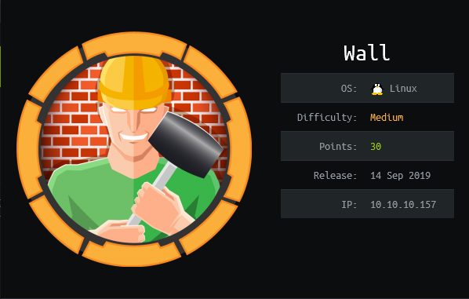

HTB - Wall Write-Up
Table of Contents
Published on 23.04.2020
Summary
Wall is a Hack The Box machine and has the IP address 10.10.10.157. It was released on the 14. September 2019, uses a Linux OS and is categorized as a medium machine.
TODO
Enumeration
The first thing to do is to enumerate and gather information about the box. One of the most important tools is the port scanner nmap. I like to run it with the parameters -T4 -A -p- to get a thorough scan:
There are two ports open on Wall:
| Port 22 - ssh: | ssh is rarely a direct way to attack HTB boxes, so I ignore that for now. |
| Port 80 – ssl/http?: | It seems like there's an Apache webserver running here |
Port 80 – Apache webserver:
Checking out the webserver on port 80 reveals the default Apache page:Surfing to some random page also tells us the version (2.4.29) of the Apache server:
Since there's only the default webpage available, I directly start dirbuster and it finds a few files and directories:
Checking out the aa.php and panel.php pages doesn't reveal anything interesting. The /monitoring directory reveals a login prompt, however:
Trying to brute force this login with hydra didn't get me anywhere, so I intercepted a login attempt with Burpsuite and changed the GET request to a POST request. This redirects me to the page 10.10.10.157/centroen, which dirbuster unfortunately didn't find, because I apparently used a wordlist that did not contain the word centroen...
There's an remote code execution exploit available at exploit-db for this version of Centreon, but it unfortunately needs to be authenticated, so we first need to find a working username-password combination. Apparently, a standard user is admin.
Foothold
Exploitation - User
Unfortunately, there's no user.txt in the home directory of mango, so it seems like we need to do some lateral movement to another user:
 Home directory of mango
Home directory of mango Checking out the /home directory reveals that there is not only a user called admin registered in the database, but also on the machine itself:
 The /home directory
The /home directory I try to simply change to the user admin by using the su command and the password I found earlier... and it works! After the surprisingly complex foothold step, this was quite easy :)
 Reading the user.txt in /home/admin
Reading the user.txt in /home/admin Exploitation - Root
To root the box, I first use my new privileges as the user admin and enumerate the box. While looking for SUID files with the command find / -perm -u=s -type f 2>/dev/null, I see that admin can execute jjs with root permissions.
 Checking for suid files
Checking for suid files jjs is a command-line tool that comes bundled with some releases of the Java Development Kit and allows for the execution of JavaScript code. GTFOBins has a page on jjs with some suggestions on what could work to escalate our privileges.
Unfortunately, simply spawning a shell doesn't work for me. However, I can use the suggested code for writing files to add my own ssh key to root:
 Adding own root ssh key using jjs
Adding own root ssh key using jjs I then simply connect to the box as root through ssh and I'm done!
 Success!
Success!